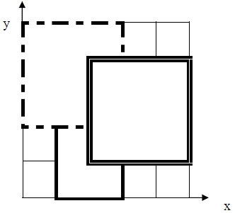

为了准备一个独特的颁奖典礼，组织者在会场的一片矩形区域（可看做是平面直角坐标系的第一象限）铺上一些矩形地毯。一共有n张地毯，编号从 $1$ 到 $n$。现在将这些地毯按照编号从小到大的顺序平行于坐标轴先后铺设，后铺的地毯覆盖在前面已经铺好的地毯之上。地毯铺设完成后，组织者想知道覆盖地面某个点的最上面的那张地毯的编号。
注意：在矩形地毯边界和四个顶点上的点也算被地毯覆盖。
输入输出样例：如下图，$1$ 号地毯用实线表示，$2$ 号地毯用虚线表示，$3$ 号用双实线表示，覆盖点（$2$，$2$）的最上面一张地毯是 $3$ 号地毯。覆盖点（$4$，$5$）的最上面没有一张地毯。

第一行，一个整数 $n$，表示总共有 $n$ 张地毯。
接下来的 $n$ 行中，第 $i+1$ 行表示编号 $i$ 的地毯的信息，包含四个正整数 $a$，$b$，$g$，$k$，每两个整数之间用一个空格隔开，分别表示铺设地毯的左下角的坐标（$a$，$b$）以及地毯在 $x$ 轴和 $y$ 轴方向的长度。
第 $n+2$ 行包含两个正整数 $x$ 和 $y$，表示所求的地面的点的坐标（$x$，$y$）。
$0 \le x,y < 1000$
$1 \le n \le 100$
输出一个整数，表示所求的地毯的编号；若此处没有被地毯覆盖则输出 $-1$。
3 1 0 2 3 0 2 3 3 2 1 3 3 2 2
3
3 1 0 2 3 0 2 3 3 2 1 3 3 4 5
-1
 Comet OJ
Comet OJ